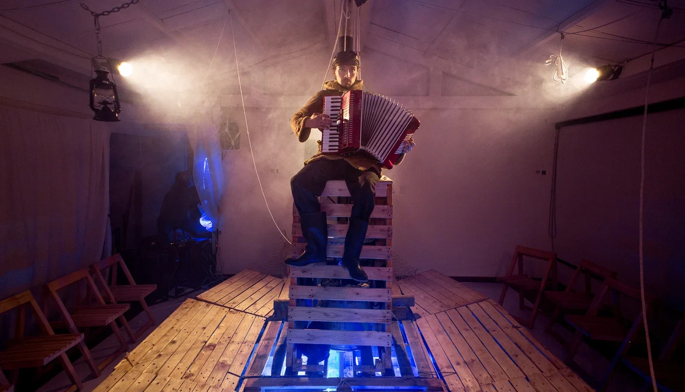

Kairós
¿Zarpamos para escapar o para descubrir?

Horacio Marino construye un barco y se lanza al mar en busca de la Utopía. En paralelo, Daniel construye un barco en una sala para encontrarse a sí mismo.
De Daniel Francisco Villamizar Díaz.Basada en una creación con el Teatro de la Memoria.
Construir un barco.
Encontrar un rumbo.
El viaje atraviesa las ideas del padre, la huella de la madre y la presencia de una gran ballena. El espectador comparte una escenografía inmersiva y acompaña la transformación de un joven que juega a ser marinero y se convierte en ballena.
La madera, las cuerdas, la luz y el sonido hacen del espacio una travesía compartida: un lugar para recordar, imaginar y dejarse transformar por el viaje.
Leer el dossier de Kairós